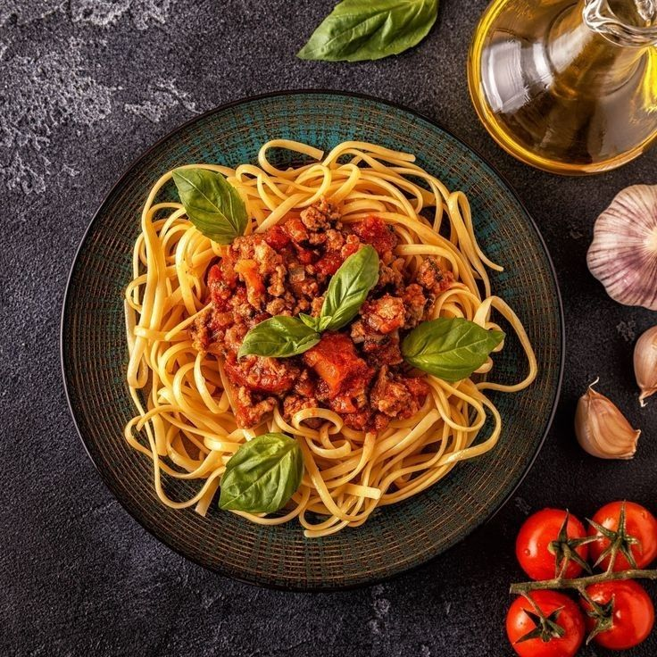

Description
Spaghetti Bolognese is a recipe originating from the Italian city of Bologna. It consists of pasta with a thick, slow-cooked sauce made with minced meat, tomato, onion, carrots, and celery, among other ingredients.
Ingredients
- 100g of carrots
- 1 branch of celery
- 50g of onion
- 1 tablespoon of olive oil
- 1 clove of garlic
- 250g minced meat(beff and pork)
- 375g tomato passata(or fried tomato sauce)
- 60 ml of white wine or sherry
- 60 ml of water
- Shall
- Ground black pepper
- 150 g of spaghetti
Steps
- We chop the carrots
- We chop the celery
- We chop the onion
- We fry the onion
- We add the carrot and celery
- Add the garlic and meat and cook for 10 minutes.
- Add the passata and cook for 10 more minutes.
- Add the wine and water and let it reduce.
- We cover and cook for 1 hour.
- We cook the pasta, add it to the pan and serve.